| 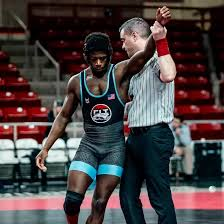 | 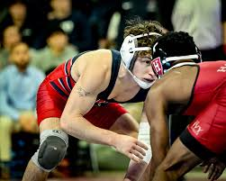 | 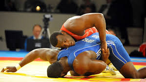 | 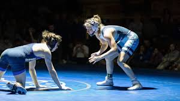 | 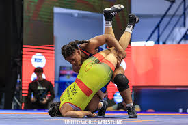 | 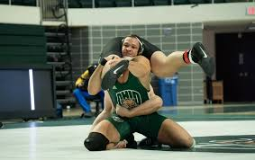 |
Wrestling represents one of the oldest forms of combat sport. The origins of wrestling go back around
15,000 to 17,000 years ago through cave drawings in France. Babylonian and Egyptian reliefs show
wrestlers using various holds known in the present-day sport. Literary references to wrestling occur as
early as the Old Testament and the ancient Indian Vedas. In the Book of Genesis, the Patriarch
Jacob is said to have wrestled with God or an angel. The Iliad, in which Homer recounts the Trojan
War of the 13th or 12th century BC, also contains mentions of wrestling. Indian epics Ramayana and
Mahabharata contain references to martial arts including wrestling. In Ancient Greece wrestling occupied
a prominent place in legend, literature, and
philosophy. Wrestling
competition, brutal in many aspects, served as the focal sport of the ancient Olympic Games. Ancient
Romans borrowed heavily from Greek wrestling, but eliminated much of its brutality through implementing
different rules. Wrestling is referenced throughout both Ancient Greek and Roman literature. Many
philosophers and leaders practiced wrestling and/or referenced the sport frequently in their works, most
notably Plato, Socrates, Aristotle, Xenophon, Epictetus, Seneca, Plutarch, and Marcus Aurelius.
Dicaearchus wrote that Plato wrestled at the Isthmian games. Many of Plato's dialogues are set in
wrestling schools.
During the Middle Ages from the fifth to fifteenth century, wrestling remained popular and enjoyed the
patronage of many royal families, including those of England, France, and Japan.
Early British settlers in America brought a strong wrestling tradition with them. The settlers also
found wrestling to be popular among Native Americans. Amateur wrestling flourished throughout the
early years of the North American colonies and would later serve as a popular activity at country fairs,
holiday celebrations, and in military exercises. The first organized national wrestling tournament in
the United States took place in New York City in 1888.
Wrestling has also been an event at every modern Olympic Games since the 1904 games in St. Louis,
Missouri; Greco-Roman wrestling was contested at the first modern Olympics in 1896, but not at the 1900
games. The international governing body for the sport, United World Wrestling (UWW), was established in
1912 in Antwerp, Belgium as the International Federation of Associated Wrestling Styles (FILA). The
first annual NCAA Wrestling Championships were held in 1928 in Ames, Iowa. USA Wrestling, located in
Colorado Springs, Colorado, was established as the national governing body of U.S. amateur wrestling in
1983.(Wikipedia)
| 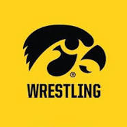 | 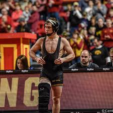 | 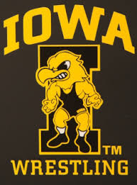 | 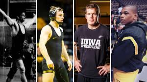 | 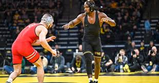 | 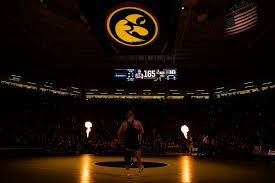 |
Iowa wrestling is one of the most prestegious wrestling programs in the country today. They have some of the toughest and best wrestlers in the world. Some include Spencer Lee, who is considered to be the best American Wrestler, Angelo Ferrari, Austin DeSanto, considered to be one of the most agressive and entertaining to watch, Dan Gable, considered to be the face of wrestling, Tom Brands, who is the coach but also was an olympic wrestler himself. The Iowa wrestling program is feared and one of the best out of all 50 states. These wrestlers are taught to be ruthless, agressive, and to never give up points, no matter what it takes.
Wrestling is my favorite hobby because it combines athleticism, strategy, and excitement in a
way that's unlike any other sport. The intensity and skill required to perform moves and outsmart
opponents keep me engaged, and there's always something new to learn or work on. It's not just about
physical strength, but also about mental toughness, discipline, and determination. Plus, the sense of
community and wrestlers makes it even more enjoyable. Wrestling allows me to push my physical limits
while also tapping into my creative side. The energy of the crowd and the dramatic moments on the mat
make it feel like an adrenaline rush every time. Before a match I have really bad nerves
but when I step on the mat, everything goes away and everything goes quiet and i start
to focus. Whether I'm watching or participating, wrestling gives me a sense of
fulfillment and excitement that nothing else really matches.
I started wrestling because I wanted to feel strong. At first I didn't want to do wrestling
at all. Once my friends convinced me to come to one practice, I was hooked. I was thinking that
this was exactly what I wanted in a sport. Even though I got whooped my first year, all that did was
motivate me to get better for next year and the year after that. When I wrestle I make new friends,
some who stick with me for a while. Whenever I wrestle someone better than me, all I do is get better because when
you wrestle good people, you become a good wrestler.